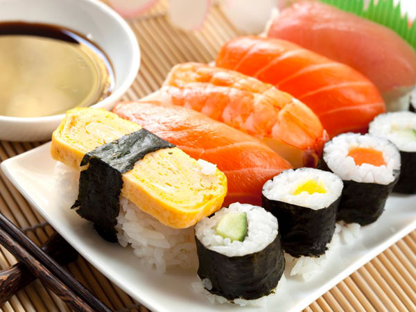
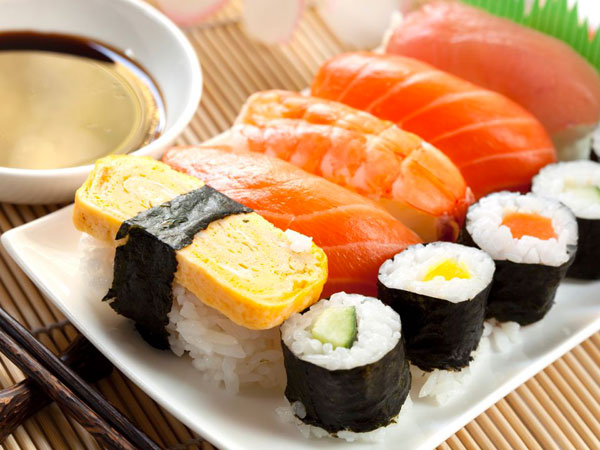

Creativity and fun rolled into one meal.
Sushi Maru invites you to enjoy our kaiten-zushi dining experience* serving both traditional and creative sushi in a relaxed and friendly atmosphere. “Maru” means round or perfection. Our extensive menu features a wide variety of the high quality sushi and sushi rolls, as well as tataki, udon, cooked appetizers and desserts for everyone. Great with kids and beginner sushi eaters; we not only offer a comprehensive sushi menu but also a wide selection of non-sushi/seafood items.
Conveyor belt sushi, (also called sushi-go-round) mainly by foreigners living in Japan, is the popular English translation for Japanese fast-food sushi. Kaiten-sushi is a sushi restaurant where the plates with the sushi are placed on a rotating conveyor belt that winds through the restaurant and moves past every table and counter seat. Customers may place special orders but most simply pick their selections from a steady stream of fresh sushi moving along the conveyor belt.
 
